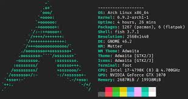

j'aime l'informatique, les jeux vidéos et les voitures "jdm". je vis à laval mais je retourne visiter mes parents chaque fin de semaine,
j'ai été élevé en outaouais, où mes parents sont encore. c'est en effet assez loin mais je m'y sens comme chez moi.
je travaille avec mon père quand je reviens, assez pour poouvoir vivre. Mon groupe de musique préféré est Korn sans hésitation(j'en écoute au moment où je rédige
ce paragraphe).
I use arch btw
Ville de laval,
Québec,Canada
H7N 6K5